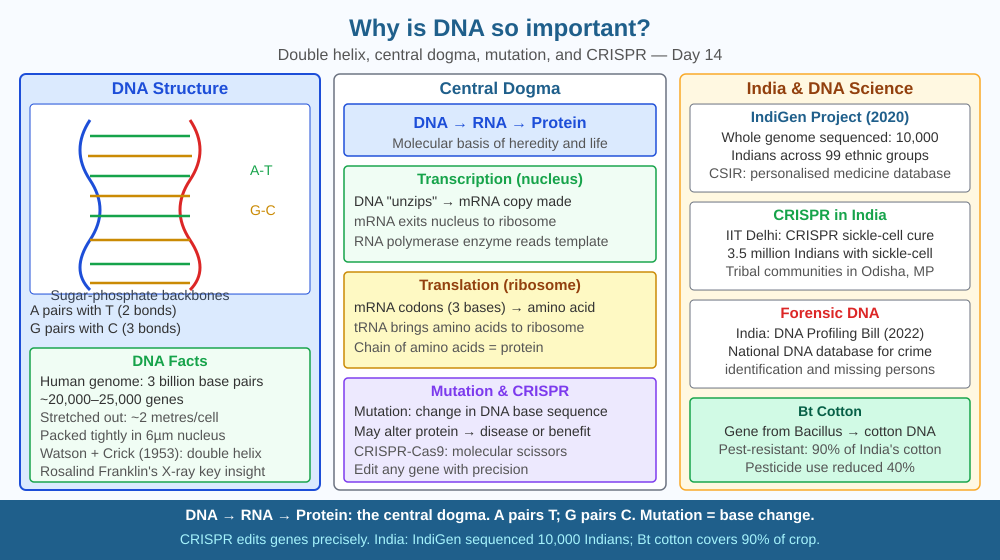

By the end of this lesson, you should be able to explain the structure of DNA, describe how it encodes protein instructions, and predict what a mutation in a gene would cause.
Every cell in your body — skin, liver, neuron — contains the same DNA. Yet skin cells make skin, liver cells make liver enzymes, neurons make neurotransmitters. How does one set of instructions build such different structures? And why does a change in one letter of that instruction set sometimes cause serious disease?
DNA structure (Watson & Crick, 1953): Double helix. Two antiparallel sugar-phosphate backbones. Four bases: Adenine (A), Thymine (T), Guanine (G), Cytosine (C). Base pairing: A-T, G-C (hydrogen bonds).
Genome: Human genome: ~3 billion base pairs. 23 pairs of chromosomes. ~20,000 protein-coding genes (only ~2% of DNA; rest: regulatory, non-coding RNA, repetitive sequences).
Gene → Protein (Central Dogma): 1. Transcription (nucleus): DNA → mRNA. RNA polymerase reads the template strand, assembles complementary mRNA. 2. Translation (ribosome): mRNA → protein. Each codon (3 bases) codes for 1 amino acid (64 codons, 20 amino acids — genetic code is redundant). tRNA delivers amino acids. Ribosome links them into a polypeptide chain.
Mutation: Change in base sequence. Missense (different amino acid), nonsense (premature stop codon), frameshift (insertion/deletion shifts reading frame).
Sickle cell disease: Single base change (A→T in codon 6 of beta-globin gene) → glutamic acid → valine → haemoglobin polymerises → sickle-shaped red blood cells → anaemia.
Think of DNA as a recipe book for a restaurant that makes only proteins:
The power of DNA lies not just in what it contains, but in how selectively different cells read it.
The included SVG shows the central dogma as a left-to-right flow diagram in three zones. The leftmost zone (blue, labelled "Nucleus") shows a double helix with base pairs (A-T in red, G-C in green) labelled and numbered, with an arrow labelled "Transcription" pointing to the central zone. The central zone (pale yellow) shows a single-stranded mRNA with codons grouped in brackets of three (e.g., AUG, GGA, UCU), with the mRNA unrolling toward the right. The rightmost zone (green, labelled "Ribosome") shows two subunit blocks clamping around the mRNA strand; tRNA molecules shaped like clover-leaves are shown approaching from below, each carrying an amino acid (labelled as coloured circles); a growing polypeptide chain extends rightward. Below the main diagram, a callout shows a zoomed base-pair comparison: normal beta-globin codon (GAG → glutamic acid) vs. mutant codon (GTG → valine), with a red arrow labelled "Sickle cell mutation" between them.

India's forensic labs (FSL, CBI) use DNA fingerprinting (STR analysis) pioneered by Alec Jeffreys. India's DNA Technology (Use and Application) Regulation Bill (2019) aims to establish a national DNA database. CSIR's genomic studies found specific Indian population variants affecting drug metabolism — Indians metabolise warfarin (blood thinner) differently from Europeans because of CYP2C9 gene variants. India's genetic diversity (100+ ethnic groups) requires India-specific genomic reference databases. India's ₹1,000 crore genome project aims to sequence 10,000 Indians — data that will personalise drug prescriptions based on each person's specific DNA variants.
DNA extraction: Mash a banana in a tube, add salt water, add dish soap (breaks cell membranes), filter. Slowly add cold ethanol. DNA precipitates at the interface — the white stringy threads are real DNA from banana cells. You can do this at home or in a school lab with basic materials. What you see is billions of DNA molecules — the actual blueprint molecules of life. After observing, estimate: if one banana cell nucleus contains ~500 million base pairs of banana DNA, and each base pair is 0.34 nanometres apart, how many metres of DNA are coiled inside that single nucleus?
CRISPR-Cas9 (Nobel Prize 2020, Jennifer Doudna and Emmanuelle Charpentier) allows precise editing of any base in the genome. The Cas9 protein uses a guide RNA to find the exact DNA sequence, then cuts both strands. The cell's repair machinery can then introduce the desired change. India's ICMR has approved CRISPR trials for sickle cell disease — cutting the mutant gene and replacing it with a corrected version. CSIR-IGIB used CRISPR-based diagnostics during COVID-19 in India. The ability to rewrite the genome of any organism is the most powerful biological tool ever created.
Predict: A CRISPR trial corrects the sickle cell mutation in a patient's bone marrow stem cells. These corrected cells then divide and produce new red blood cells. Predict what the patient's blood would look like six months after the treatment — what proportion of red blood cells would be sickle-shaped, what symptoms would improve, and why the correction must be made in stem cells rather than in mature red blood cells?
Why is DNA described as the blueprint of an organism?
Correct answer: C
Why is understanding how DNA encodes information more useful than just knowing DNA is important?
Correct answer: A
If a mutation changed the DNA sequence in a gene, what would you predict?
Correct answer: B
A geneticist analyses two patients with anaemia. Patient A has sickle cell disease (a missense mutation). Patient B has a frameshift mutation in the same beta-globin gene — a single adenine base has been deleted at position 4 of the coding sequence.
Compare the two patients: (a) explain why Patient A's haemoglobin is abnormal in shape but is still a complete protein of roughly normal length; (b) explain why Patient B's protein is likely to be far more severely disrupted; (c) predict which patient would have a more severe form of anaemia and why; (d) name the specific type of mutation in Patient B and explain what "reading frame" means using the codon table as your example.
Only about 2% of your DNA codes for proteins. The remaining 98% was once dismissed as "junk DNA." We now know much of it contains regulatory switches — DNA sequences that turn genes on or off in specific cell types at specific times. One of these switches is why liver cells and skin cells, despite sharing identical DNA, read completely different pages of the recipe book. A mutation in a regulatory switch rather than in the gene itself can be just as harmful as a coding mutation — it silences a gene that should be active, or activates one that should be silent.
DNA is not just a storage molecule — it is a dynamic instruction set where a single letter change can alter protein shape and cause disease, and where different cells selectively read different genes to build entirely different structures from the same blueprint.